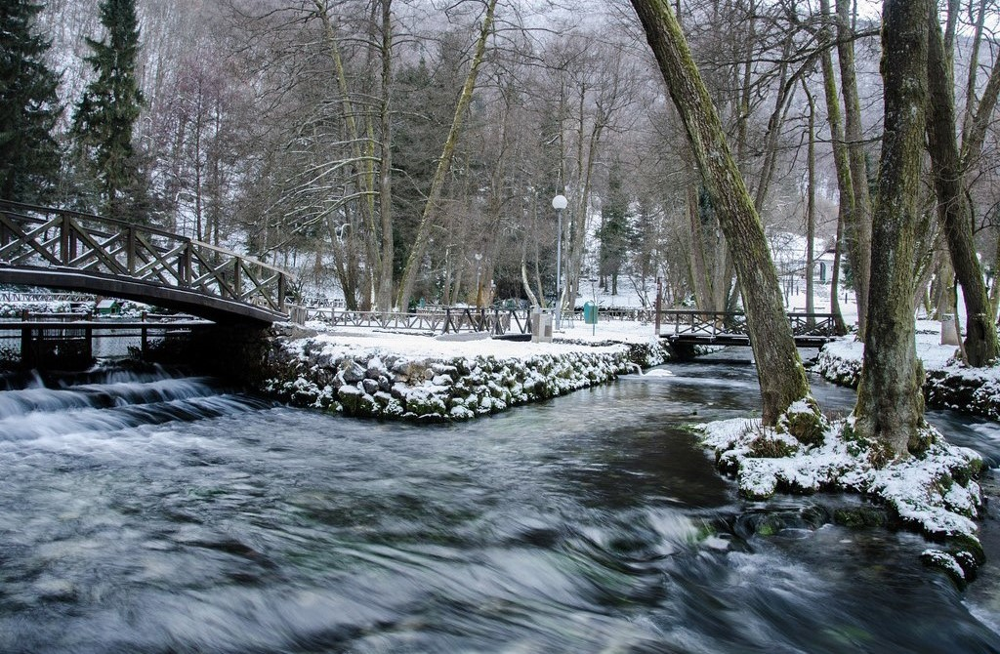
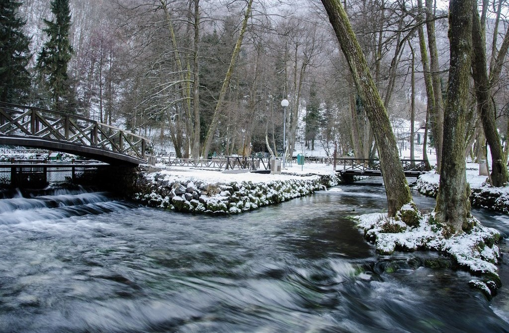

U neposrednoj blizini Ilidže nalazi se spomenik prirode Vrelo Bosne, do kojeg se dolazi kroz tri i po
kilometra dugu stoljetnu aleju platana i kestenova.
Velika aleja, zasađena do 1894. godine sa ukupno 726 stabala javorolisnog platana i desecima stabala
divljeg kestena, idealna je za šetnju, vožnju biciklom i rolama, trčanje... To je prirodni park
ispresijecan izvorima i potočićima, jezercima i otočićima. Vrelo Bosne je morfološki, hidrološki i
botaničko-hortikulturni fenomen, jedno od najljepših mjesta Sarajeva i njegove okoline.
Na području Vrela Bosne nalazi se i glavni izvor pitke vode grada Sarajeva – Bačevo. Ovo područje, koje
se prostire na površini od 603 hektara, stanište je za najmanje 26 različitih biljnih zajednica i 20
životinjskih vrsta, od kojih su neke endemske. Mala Bosna, vodotok u koji se ulijeva šest izvora s
područja Vrela Bosne, stanište je autohtone vrste potočne pastrmke.
Velika aleja je pješačka staza povezana s područjem Stojčevca, još jednim od sarajevskih prirodnih
izletišta. Stojčevac čine šumski parkovi, predivni grmovi divljih ruža, malina i kupina. U blizini ovog
prirodnog raja nalazi se i nekropola Vrutci s arheološkim nalazištem nekadašnje crkve sv. Stjepana
Prvomučenika iz 10. stoljeća, kao i Rimski most iz osmanlijskog perioda.
Prepoznatljiv simbol Ilidže i Vrela Bosne su i čuveni fijakeri, koji već više od 100 godina prevoze
goste Velikom alejom od Ilidže do Vrela Bosne. I danas živi sjećanje na to da je prvi fijaker došao s
prestolonasljednikom Franjom Ferdinandom 1895. godine.